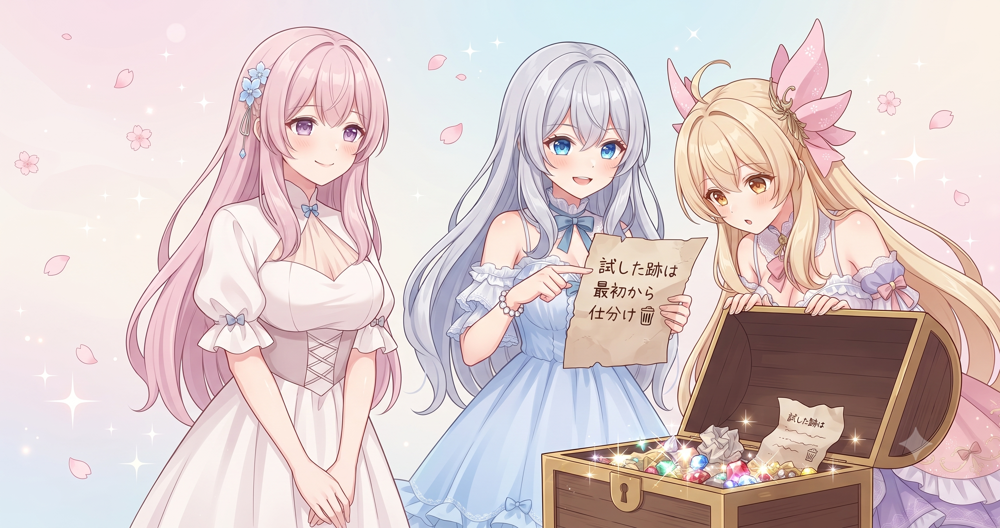
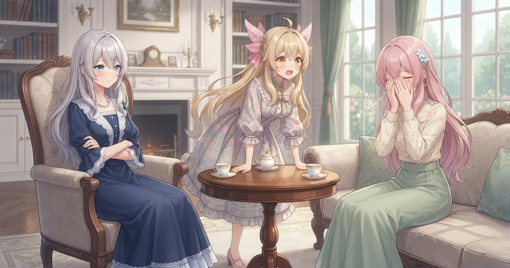
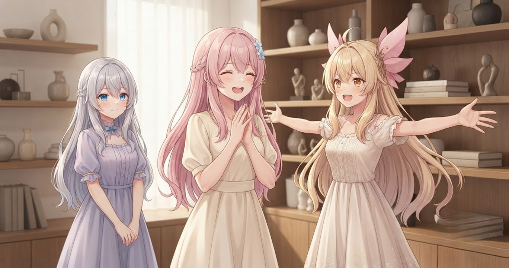
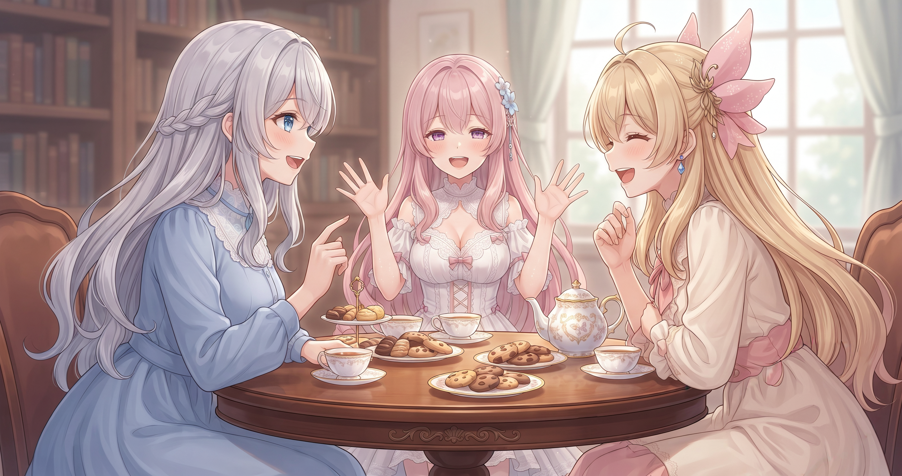

📌 3行まとめ
- 生成物やテスト跡のファイルを整理し、除外設定を拡充して「残すもの・消していいもの」の仕分けを完了した
- コールドスタートテストを走らせたら、ブログ設定のミス・壊れリンク十数か所・ファイル名のズレが一気に発覚してまとめて修正した
- 2週間ぶんの自動集積データをスナップショットとして保存し、250本あまりのドキュメントを新しい共通拠点に集約した
1. 試した跡は最初から「見なかったことリスト」に

AIでものをつくっていると、動作確認のための出力ファイルがじわじわと積み上がっていく。「これ試してみた」「さっき確認したやつ」——そういった一時的なファイルが、本当に大事な成果物と混在し始めると、後で「これ残すの？捨てていいの？」と毎回悩む羽目になる。
今日やったのはその仕分けをシステム化すること。試した跡が生まれるフォルダをあらかじめ「記録しなくていい」リスト（.gitignore）に追加し、本番の成果物だけがきれいに管理される状態を作った。あわせて動画生成ツールのテスト出力も片づけ、スクリプトを整理してフェーズ0のスナップショットとして保存した。
.gitignore って何？なんか名前かっこいいけど。.gitignore は一度書いて終わりではなくて、新しい『試した跡』が増えるたびに追記して育てていくものなんです。今日はその育て方をひと回り充実させました。📝 ポイント（初心者向け解説・技術メモ・まとめ）
- ゴミ箱の仕分けと同じで、「作品（残すもの）」と「試した跡（消していいもの）」を最初からフォルダごと分けてしまうと、後から悩む時間がゼロになります🗑️
- 技術メモ：
.gitignoreにテスト出力ディレクトリを追加してgit管理対象から除外。新カテゴリが発生するたびに追記する運用が実態に合う - ひとことまとめ：「見なかったことリスト」を育てると、本物の成果物だけが浮かび上がる
2. 👀 今日のやらかし：点検したら十数か所まとめて直す羽目になった

整理作業の合間に「冷えた状態からゼロで起動して、全部ちゃんと動くか確認する」テスト（コールドスタートテスト）を走らせた。前提知識なしに全ての設定を読み直してみると、普段の作業中には気づかないズレが浮かび上がってくる。
結果は——壊れたリンクが十数か所、ファイル名とURLの設計がミスマッチになっている箇所、ブログのサムネ生成に関する説明の書き方ミス。まとめてやらかしていた。全部その日のうちに修正してクリアにした。あわせて、以前のフォルダ整理で資料の置き場所を移動したとき、コード内の「この資料はここにあります」という説明書き（docstring）が古い場所のままになっていたのも、新しい場所に合わせて書き直した。
📝 ポイント（初心者向け解説・技術メモ・まとめ）
- 「冷えた目」でゼロから読み直すと、普段は見えないリンク切れや住所ミスが一気に浮かび上がります。たまに何も前提を持たない状態でテストしてみると、意外なズレが発見できます🕵️
- 技術メモ：コールドスタートテストでブログパイプラインのサムネ設定誤り・壊れリンク十数か所・slug-filenameミスマッチを検出して一括修正。docstringの参照パスもVault移行後の新パスに追従
- ひとことまとめ：「動くからいいや」は今の自分だけに通じる免除。未来の自分のために直す
3. 2週間ぶりの記念撮影：250本あまりのドキュメントを一か所に

裏側では毎日、創作やツールに役立つ情報が自動でコツコツと集まっている。今日の時点で累計はおよそ1万件、直近1日だけでも1000件超が新たに積み上がっていた。これだけの量になると「いつの時点でどこまで集まっていたか」がぼんやりしてくるので、2週間ぶりに区切りのスナップショット（その時点の状態をそのまま保存したもの）を残した。
あわせて、各プロジェクトからバラバラに浮いていた250本あまりのドキュメントを、新しい共通拠点にまとめて収容した。「アイデア再発見プール」として整理したことで、以前作ったアイデアが埋もれずに引き出しやすくなった。SNSの実データ取得については、見ていない間にブラウザが固まって暴走するリスクを避けるため、この日も手動セッションで補完する方針を継続した。
📝 ポイント（初心者向け解説・技術メモ・まとめ）
- 毎日コツコツ増えるデータは「1万件！」と聞いてもピンとこないけど、定期的に「ここまでは保存済み」という区切りを残すと、おかしくなったときに戻せる安心感が生まれます📸
- 技術メモ：2週間分の自動集積データをまとめてスナップショットコミット。250本あまりのloose mdをhardlink方式で共通拠点に収容し、三層メモリ設計・手動管理ファイル保護フックも整備
- ひとことまとめ：全部自動にしない選択が、長期安定の鍵になることもある
4. 配信のはなし：「ストーリーも」のひと言が増えた日
今日も王道RPGのライブ配信をお届けした。配信タイトルに注目してほしいのだが、少し前は「日課をやりたい気持ちはある」だったのが、今日は「ストーリーも日課もやりたい気持ちはある」に変わった。数文字の追加で、「今日は本筋の物語を進めることが目標の回」という意思表示になっている。
長尺アーカイブは投稿し終わったあとからもじわじわと再生が伸び続けるのが特徴で、ストック資産として育っていく手応えがある。最新の配信情報はX（https://x.com/irisfionaAIBS）を確認してね。
📝 ポイント（初心者向け解説・技術メモ・まとめ）
- 「今日は何を達成する回か」が伝わるタイトルは、見てくれる人の期待を先につくれます。「消化回」と「目的のある回」はひと言で顔が変わります🎮
- 技術メモ：タイトルに進行目標を明示することで惰性の日課回と差別化。長尺アーカイブはストック資産として後追い再生が伸長する傾向がある
- ひとことまとめ：「ストーリーも」のひと言が、ただの日課回を旅の続きに変えた
5. 🎁 お楽しみコーナー：どっち派会議

6. 💐 今日のまとめ
- 試した跡は最初から記録対象外に除外する設定を育てておくと、「これ残す？」の悩みが消える
- コールドスタートテストは、日常では見えない壊れリンクや参照ミスを一気に炙り出してくれる
- 自動で増えるデータには定期的な「この時点の記念撮影」が必要。全部自動にしない選択が安定につながることもある
- 長尺アーカイブはストック資産。公開後もじわじわ育つ
みなさんは、ファイルの整理ってこまめに都度やる派ですか？それとも貯まってから一気にやる派ですか？
💬 コメント
お名前とコメントだけで送れるよ（承認されるとみんなに表示されます🌸）
コメントを読み込み中…